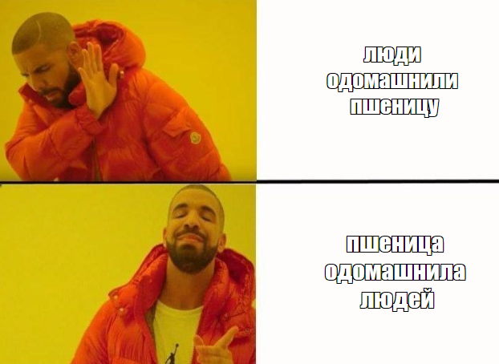
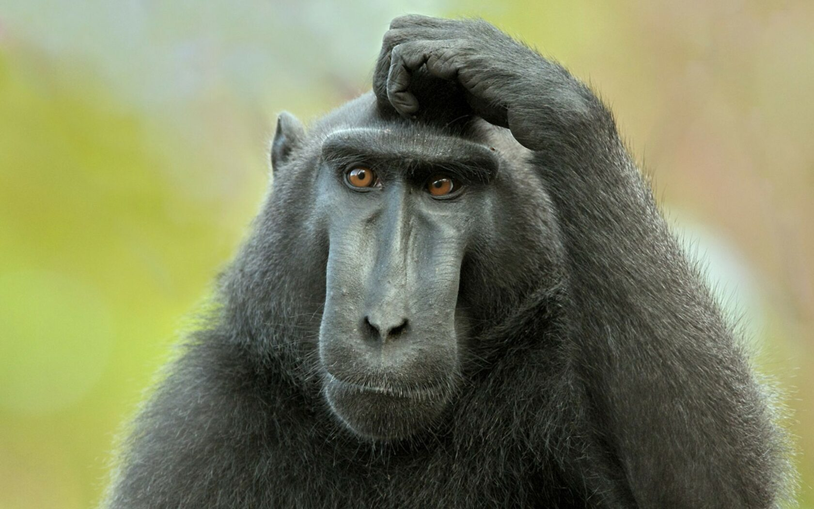
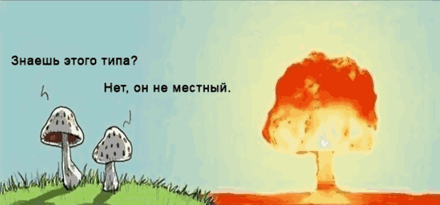

Больше не стои́т. Национализм на повестке дня
Почему вера в националистические, этнические и другие формы вредоносных мифологем является не просто реконструкцией и историческим атавизмом, но прежде всего серьёзным препятствием на пути к ни много ни мало спасению Жизни на планете Земля.

Гадкого времени суток!
И начнём мы, пожалуй, с постановки проблем. Их у нас три основных, из которых в большинстве своём вытекают все остальные. Тут я, признаюсь, не мудрствовал лукаво и обратился к известному философу и историку Ювалю Ною Харари. В последние годы его работы получили статус бестселлеров, хотя главная заслуга их, на мой скромный взгляд, в простоте изложения и самой банальной систематизации различных ветвей человеческого знания о себе и окружающей действительности. Иными словами - эдакий незатейливый научпоп про наше прошлое, настоящее и будущее как вида.

Ближе к делу!
Наш с Ювалем консенсус по данному вопросу сводится к следующему:
Перед современным человечеством стоит 3 принципиальных вопроса1, от разрешения которых зависит не только судьба нашего вида, но и судьба всех живых организмов на планете Земля. Как минимум. Начать я хотел бы с вопроса, которым занимаюсь давно и на котором съел уже не один комплект зубов:
1. Экологический кризис
Тут, кстати говоря, Харари разочаровал меня в своей последней книге “21 урок для 21 века”, т.к. при описании климатических изменений и вызванных ими последствий для эко и биоценозов использовал в основном либеральные клише и нарративы, говоря о чрезмерной эксплуатации ископаемых и прочем. Лишь вскользь или почти не затронув главную причину - животноводство (и агрокультуру2 в целом).
Но как это связано с национализмом, про который написано в названии?
Всё очень просто - современный мир глобален. Вам это может нравиться или нет, возможно кто-то даже в восторге от того, как быстро можно путешествовать или на каком расстоянии можно общаться с людьми.
Только вот проблемы, которые следуют за нашей высокотехнологичной цивилизацией, тоже касаются всех и каждого, практически вне зависимости от места проживания.
Чтобы сразу изгнать сомнения приведу лишь пару примеров:
Во-первых, сами по себе климатические изменения - результат деятельности человечества. Если вы не согласны, поздравляю, вы - мракобес3. Ведь в учёном сообществе по данному вопросу безоговорочный консенсус.
Сама наша цивилизация обязана своим существованием логистическим цепочкам4, позволяющим транспортировать энергоносители и товары буквально в другую часть мира. Это делает все страны зависимыми друг от друга во всех планах: экономическом, энергетическом и политическом. А главное - экологическом. Ведь авария на каком-либо заводе приводит к отравлению сотен и тысяч километров рек и озёр. Пластиковая бутылка, которую вы выкините в ручей у дома5, через пару месяцев или год легко окажется в желудке кита в Тихом океане. Авария на атомной электростанции способна сделать непригодной для жизни целый континент6. И подобные примеры можно приводить бесконечно.
Вывод вот какой - мы в глубокой жопе. Прямо сейчас решается судьба абсолютного большинства живых организмов на нашей планете. Кто же нас спасёт?
Устойчивые, независимые национальные государства, способные позаботиться о себе и выстроить добрососедские отношения с окружающими политическими субъектами?
Жесть, какой несусветный бред! Однако же мы его часто слышим, и особенно сейчас, когда цветные тряпки и национальные лозунги массово заменяют мозги даже тем, кто до этого подавал какие-то признаки мозговой активности.
Практическим путём, проанализировав политические программы националистически настроенных (да абсолютного большинства) политиков и партий, вы увидите, что они пытаются игнорировать данный вопрос.
НАЦИОНАЛИЗМУ НЕЧЕГО ПРЕДЛОЖИТЬ ДЛЯ РЕШЕНИЯ ЭКОЛОГИЧЕСКОГО КРИЗИСА
Что естественно и не вызывает никакого удивления, ведь прерогативой национальных лидеров всегда будут такие вещи как экономическое благосостояние жителей страны, независимость в принятии политических решений, обогащение элит (если уж быть справедливыми) и сохранение границ (или расширение).
Фактически, это предикат местных мелких интересов над интересами глобальными, которые для одного маленького лидера нации или даже представителя многомиллионного народа являются чем-то заоблачным и неразрешимым.
А так оно и есть! Как, скажите мне, может Байден повлиять на китайские заводы или разрабатывающие предприятия, вред от которых вполне ощутим даже за тысячи километров от них? Если мог бы - стал? Ведь от выгодных экономических договоренностей зависит благосостояние избирателей, а значит и позиция власти.
Рискнет политический лидер стабильностью и развитием собственной страны во имя популяции исчезающих тигров или рыб? Ответ очевиден.
Уверен, большинство сообразительных и смышлёных читателей и сами приведут с десяток примеров, когда интересы Нации становились тяжелым ботинком на горло Природы.
2. Стремительно развивающиеся технологии
Да, это еще один важный пункт, по которому мы с Ювалем сошлись на 100 процентов.
“Но что тут?”,- спросите вы, - “Разве не могут соседствующие независимые государства гармонично развиваться во благо общего прогресса?”
Ох-ох-ох…
Нет, не могут.
Ведь главным аспектом такого развития является как раз-таки противостояние и конкуренция рыночка, который, как можете убедиться, нарешал.
Предугадав ваше недоумение относительно вопроса “А что вообще плохого в технологическом прогрессе и почему это такая же глобальная проблема, как и экологический кризис?” я сразу же расскажу любимую большинством антропологов и биологов басню (с важным смыслом):
Представьте бабуина, который видит посреди саванны пальму с бананами7.
Всё бы ничего, да возле пальмы бродит лев.
Сейчас для бабуина возникает ряд крайне важных вопросов: - насколько он голоден? - сколько на пальме бананов? - какое до неё расстояние? - а как далеко от пальмы лев? - может ли бабуин подождать, пока лев уйдет, или обессилит от голода? - лев выглядит сытым или голодным и агрессивным?
И ряд других. Только беда в том, что у бабуина нет калькулятора и различных наблюдательных приборов. Или есть?
Учёные сходятся во мнении, что есть. Это чувства бабуина, нюх, зрение, слух и способность составлять из этого общую картину мира.
Всё это подарили бабуину миллионы лет эволюции его предков.
Фактически, весь бабуин - это биологический алгоритм с собственными вычислительными мощностями.

А теперь следим за руками, сейчас будет фокус:
На сегодняшний день у учёного сообщества для вас нет иного ответа, кроме как то, что каждый из нас - ровно такой же биологический алгоритм, с более сложными вычислительными операциями.
Бабуин собирается обмануть льва и съесть банан? Что ж, мы выбираем политического лидера или планируем семейный бюджет на несколько лет, а может покупаем автомобиль или строим отношения с партнёром или партнёркой.
Души, глубинного я, божественной искры, увы, у лысой обезьяны пока не нашли…
Далее разворачивается ещё более занимательная магия, оставайтесь со мной!
Итак, допустим что мы - биологический алгоритм. Но себя мы знаем плохо, часто из-за голода, стресса, гормональных перебоев мы склонны принимать абсолютно вредоносные для себя и других решения.
Так, исследования показывают, что судьи (в странах с более-менее независимой судебной системой) склонны давать более суровые, связанные с лишением свободы решения, если …. голодны8… Как просто, да? Ведь именно голод вызывает повышение глюкокортикоидов в организме, а как следствие, увеличивает стресс и агрессию, взывая к миндалине. Но не будем отвлекаться.
К технологии!
Вы листаете ленту инстаграма. Ваш зрачок расширяется при виде пирожных. Дофаминовый (гормон удовлетворения) ответ организма. Взгляд не фокусируется на тесте, а в основном обследует фрукты, украшающие пироженку сверху. Всё это фиксирует камера, которая находится в каждом устройстве чуть выше экрана. Какие фрукты вам нравятся больше всего, пирожные какой формы вы просматриваете дольше, а какие пролистываете, красный, белый или коричневый цвет - что вам больше нравится?
ИСКУССТВЕННЫЙ ИНТЕЛЛЕКТ отщёлкает эти ваши особенности на раз-два.
И вот вы уже сами не поняли, как ваши устройства заполонили картинки и видео этих прекрасных пирожных, с десяток которых вы уже съели за последние пару дней.
Прекрасно, если капиталисты ограничатся лишь тем, чтобы манипулировать вашей привязанностью к сладкому (что тоже смертельно - от диабета умирает больше, чем в войнах). Кто-то обязательно захочет сформировать ваши политические предпочтения, культурные и ценностные нарративы.
Не надо быть сильно лучше вас - просто знать вас чуть-чуть лучше, чем вы сами себя.
Конец, биологический алгоритм “человек” хакнут9!
И это только одна из проблем современности, которая уже уничтожает начисто концепцию свободы воли.
Возвращаемся к нашим баранам? Помогут ли в этом национальные государства?
Или готовы будут отдать любые деньги, чтобы получить хоть толику подобной силы контроля над внутренним рынком избирателей и потребителей? А другие страны? Если они используют это против нас?! Какой ужас! Нам срочно нужно направить все средства в развитие новейшего софта и самого высокоразвитого ИИ10!
Ведь если одна страна решит дать выбор собственному народу, чуть-чуть притормозить технологии Big data и Машинного Обучения, поставив идеалы свободы и независимости личности выше превосходства над соседями - она рискует тем, что уже через пару месяцев соседние государства, которые не проявили такой сознательности, взломают все банковские и военные системы добряков.
Будет в такой ситуации кто-то делать паузу?
3. Ядерное оружие. Наше любимое эхо 20-го столетия
Как мы можем наблюдать в последнее время, риск глобальной ядерной войны ближе чем когда-либо в истории. При этом, сама концепция оружия массового поражения, как и высоких технологий в купе с ИИ, обслуживают наиболее агрессивные и ужасающие цели национальных или многонациональных государственных образований.
С тех пор, как человечество достигло определённого уровня технологического развития, когда небольшая группа людей обладает возможностью стирать города и страны с лица земли11, изоляционизм отдельных стран - это вообще маразм.
Кто может знать, какую дичь завтра откопает очередной диктатор или вождь народов в закромах истории, чтобы оправдать необходимость приведения к согласию или демократии соседнюю страну или малый народ?
Вся эта история с ядерным оружием похожа на игру в покер в закрытом помещении, где все игроки наставили оружие друг на друга, при этом у всех их крайне плохая рука.
А мы с вами ждём выстрела, находясь в той же комнате, без оружия и понимая полное отсутствие собственной субъектности.

Чем поможет нам тут национализм и независимость?
Какой из всей этой писанины можно сделать вывод?
Дела из ряда вон плохи. Хуже, чем когда бы то ни было, ведь никогда ранее в истории мы не обладали силами, способными обнулить всю эволюцию на нашей красивой планете.
И нет причин предполагать, что кто-то очень стремится всё исправить.
Все эти вопли, пропитанные демократическим свободным миром, русской идеей или коллективным добром киберпанка поднебесной (и многие другие поменьше) - похожи на вой издыхающего зверя, пожирающего себя самого без возможности остановиться.
Каждая государственная разноцветная тряпка должна быть оплёвана и отринута, вместе со всей своей многовековой священностью и историей, каждая ограничивающая глобальную перспективу идея - растоптана и низвергнута во мрак.
У нас практически не осталось времени…
-
Юль Ной Харари, “21 урок для 21 века”. Синдбад, Москва, 2022. ↩
-
Джон Зерзан, “Первобытный человек будущего”, сборник статей и эссе. ↩
-
Метаанализ 88 125 рецензируемых научных работ, опубликованных в 2012-2020 гг., Корнеллский университет. ↩
-
Деррик Дженсен, “Эндшпиль”. ↩
-
Научное исследование, опубликованное в PLOS One journal 2 декабря 2020 г. GPS маячок в бутылке, выброшенной в реку показал путь в 1767 миль.(2 844 км) ↩
-
Георгий Лепин и Иван Смоляр “Атомная энергетика - “мирный” убийца”. ↩
-
Роберт Сапольски, “Биология добра и зла.”, Альпина Нон-фикшн, Москва, 2021 г. ↩
-
Роберт Сапольски, “Биология добра и зла.”, Альпина Нон-фикшн, Москва, 2021 г. ↩
-
Юваль Ной Харари, “21 урок для 21 века”. Синдбад, Москва, 2022. ↩
-
“Социальная диллема”, документальный фильм от Netflix? 2020 г. ↩
-
Теодор Джон Качинский, “Индустриальное общество и его будущее”. ↩